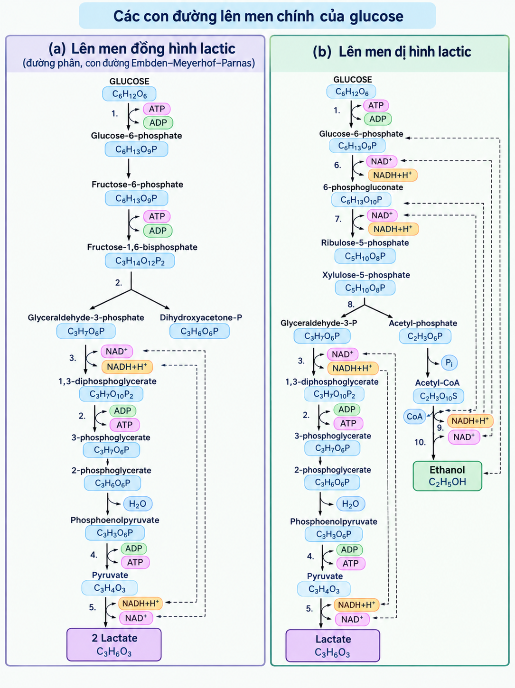

Câu 5: Quá Trình Lên Men Sữa Chua & Vai Trò Của Vi Khuẩn Lactic
Ứng dụng kiến thức Khoa học Tự nhiên phân tích cơ chế biến đổi sinh hóa, cấu trúc protein casein và các yếu tố ảnh hưởng tới chất lượng sản phẩm lên men.
Đề bài yêu cầu:
Trong quá trình làm sữa chua, sữa từ trạng thái lỏng chuyển thành sản phẩm có vị chua và cấu trúc đặc hơn. Hãy sử dụng kiến thức Khoa học Tự nhiên để trả lời các câu hỏi:
- a) Xác định vai trò của vi khuẩn lactic và vẽ sơ đồ minh họa quá trình chuyển hóa đường trong sữa thành acid lactic.
- b) Viết phương trình tổng quát thích hợp biểu diễn quá trình lên men lactic.
- c) Giải thích vì sao sự giảm pH làm thay đổi trạng thái của protein sữa.
- d) Phân tích ảnh hưởng của nhiệt độ và thời gian ủ đến hoạt động của vi khuẩn và chất lượng sản phẩm.
Vai trò của Vi khuẩn Lactic (LAB) & Sơ đồ chuyển hóa
Tính chất bảo quản
Axit hữu cơ là sản phẩm cuối cùng của quá trình chuyển hóa carbohydrate do LAB tạo ra. Lên men đồng hình tạo acid lactic, dị hình tạo acid lactic, acid acetic, ethanol và $CO_2$. Sự giảm pH nhanh chóng ức chế vi khuẩn gây hư hỏng và vi khuẩn gây bệnh. LAB còn tiết bacteriocin (như nisin) có bản chất peptide giúp bảo quản sinh học.
Sự hình thành hương vị
Quá trình chín và lên men nhờ starter LAB và non-starter LAB giúp phân giải lactose, lipolysis (phân giải lipid thành acid béo tự do) và proteolysis (phân giải casein). Hương vị đặc trưng được tạo nên từ acid lactic cùng các hợp chất thơm như Acetaldehyde, diacetyl, propanoic acid...
Cải thiện cấu trúc thực phẩm
Sữa chua có kết cấu mềm, mịn và đặc nhờ sự sản sinh exopolysaccharide (EPS) làm chất tạo độ nhớt. Cấu trúc gel được củng cố bằng sự đông tụ protein khi điện tích âm trên bề mặt casein bị trung hòa bởi acid do LAB tạo ra.
Đặc tính có lợi cho sức khỏe
Thủy phân casein bởi L. helveticus tạo ra các peptide hỗ trợ hạ huyết áp, miễn dịch và gắn canxi. Enzyme $\beta$-galactosidase do S. thermophilus và L. bulgaricus tiết ra giúp người bất dung nạp lactose dễ dàng hấp thu sản phẩm.
Sơ đồ minh họa quá trình chuyển hóa đường trong sữa thành acid lactic:

Hình 1. Các con đường lên men chính của glucose (Lên men đồng hình & Lên men dị hình lactic).
Ghi chú: Hiệu chỉnh từ "Major fermentation pathways of glucose", trong Lactic Acid Bacteria, bởi Trần Đình Kiệt, chèn thêm công thức phân tử.
Phương trình tổng quát biểu diễn quá trình lên men lactic
Lên men đồng hình:
(Glucose / Galactose $\rightarrow$ 2 Acid Lactic + 2 ATP)
Lên men dị hình:
(Glucose $\rightarrow$ Acid Lactic + Ethanol + Carbon Dioxide + 1 ATP)
Ảnh hưởng của sự giảm pH đến trạng thái Protein sữa
Khi độ pH của môi trường giảm xuống dưới 5.0 (tiệm cận điểm đẳng điện pI $\approx 4.6$), các micelle casein (protein chính trong sữa) bị đứt gãy liên kết tĩnh điện do sự proton hóa các gốc acid amin.
Protein đã biến tính sẽ giải phóng các nhóm kỵ nước và tái cấu trúc thông qua tương tác kỵ nước giữa các phân tử casein. Mạng lưới liên kết không gian ba chiều này giữ các phân tử nước bên trong, tạo nên trạng thái đông tụ bán rắn (gel) đặc trưng cho sữa chua.
Ảnh hưởng của Nhiệt độ & Thời gian ủ
1. Ảnh hưởng của Nhiệt độ ủ
Đối với hoạt động của vi khuẩn:
- Khoảng nhiệt độ tối ưu: Chủng ưa nhiệt như S. thermophilus ($40-42^\circ\text{C}$) & L. bulgaricus ($42-46^\circ\text{C}$) phối hợp tương hỗ (proto-cooperation) đạt hiệu suất cao nhất. Chủng ưa ấm ($28-34^\circ\text{C}$) thích hợp cho cheese/buttermilk.
- Nhiệt độ quá thấp: Giảm hoạt tính enzyme, kéo dài pha thích ứng (lag phase) và làm chậm sinh acid.
- Nhiệt độ quá cao: Ức chế sinh trưởng, làm biến tính enzyme sinh học hoặc tiêu diệt vi khuẩn, mất cân bằng tỷ lệ chủng phối hợp.
Đối với chất lượng sản phẩm:
- Nhiệt độ thấp hơn chuẩn: Sữa lâu đông tụ, dễ tạp nhiễm vi sinh vật lạ; sản phẩm lỏng lẻo, kém chua và thiếu hương thơm.
- Nhiệt độ cao hơn chuẩn: Axit hóa quá nhanh làm mạng lưới casein hình thành không đồng đều, gây hiện tượng tách nước (tách huyết thanh sữa), khối đông co rút, có vị chua gắt hoặc mùi vị lạ.
2. Ảnh hưởng của Thời gian ủ
Đối với hoạt động của vi khuẩn:
- Thời gian tối ưu: Vi khuẩn nhân nhanh trong pha mũ, giảm pH xuống $4.5 - 4.7$. Hương thơm (acetaldehyde, diacetyl) đạt mức bão hòa hoàn hảo.
- Thời gian quá ngắn: Quần thể chưa đạt mật độ tối đa, chưa tích tụ đủ acid lactic.
- Thời gian quá dài: Tích tụ quá nhiều acid gây tự acid hóa (autoacidification), cạn kiệt dinh dưỡng làm sụt giảm vi khuẩn sống.
Đối với chất lượng sản phẩm:
- Ủ chưa đủ thời gian: pH chưa đạt điểm đẳng điện (pH $\approx 4.6$), gel lỏng lẻo, độ chua thấp và vị nhạt nhẽo.
- Ủ quá thời gian: Quá acid (chua gắt), vỡ cấu trúc gel làm nứt khối đông, tách nước nghiêm trọng và giảm giá trị cảm quan.
Tài liệu tham khảo
- Vinderola, G., Ouwehand, A., Salminen, S., & Von Wright, A. (2024). Lactic acid bacteria. https://doi.org/10.1201/9781003352075
- Chen, C., Zhao, S., Hao, G., Yu, H., Tian, H., & Zhao, G. (2017). Role of lactic acid bacteria on the yogurt flavour: A review. International Journal of Food Properties, 20(sup1), S316-S330. https://doi.org/10.1080/10942912.2017.1295988
- Widyastuti, Y., Rohmatussolihat, & Febrisiantosa, A. (2014). The role of lactic acid bacteria in milk fermentation. Food and Nutrition Sciences, 05(04), 435-442. https://doi.org/10.4236/fns.2014.54051